KORE projectile review: all projectiles and launching moves
Review-only page. It covers 9 projectile definition(s) and 27 move binding(s). 0 projectile(s) currently have no sourced replacement proposal.
Franky mechanical-blaster-projectile
Sourced replacement proposal available
One Piece cyborg arm-cannon/blaster effect.
Primary source: Spriters Resource page | direct PNG sheet
Launching move sequences
kickleftFranky Left Kickcommand/input: kickspawnFrame: 12frames: 20
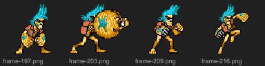
kickrightFranky Right Kickcommand/input: specialspawnFrame: 14frames: 10
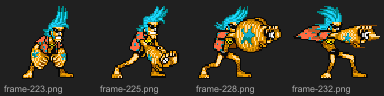
Current active projectile frames
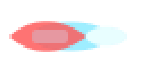
current 0: frame-000.png
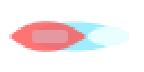
current 1: frame-001.png
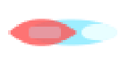
current 2: frame-002.png
Proposed sourced frames
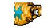
0: active muzzle ball
/characters/franky/frames/frame-228.png
crop {"left":34,"top":13,"width":27,"height":26}
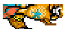
1: flying blaster flame
/characters/franky/frames/frame-232.png
crop {"left":18,"top":18,"width":41,"height":17}
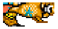
2: fading blaster flame
/characters/franky/frames/frame-232.png
crop {"left":23,"top":18,"width":36,"height":17}
Naruto chakra-or-tool-projectile
Sourced replacement proposal available
Naruto chakra slash/tool-like projectile from local source frames.
Primary source: Spriters Resource page | direct PNG sheet
Launching move sequences
kickrightWind Release: Rasenshurikencommand/input: specialspawnFrame: 2frames: 4
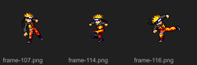
Current active projectile frames

current 0: frame-000.png

current 2: frame-002.png
Proposed sourced frames
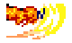
0: chakra slash startup
/characters/kiro/frames/frame-115.png
crop {"left":45,"top":36,"width":40,"height":26}
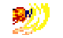
1: chakra slash active
/characters/kiro/frames/frame-115.png
crop {"left":52,"top":35,"width":33,"height":25}
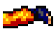
2: chakra slash recovery
/characters/kiro/frames/frame-116.png
crop {"left":48,"top":35,"width":32,"height":24}
Majin Buu ki-energy-projectile
Sourced replacement proposal available
Dragon Ball pink/yellow ki and magic beams from Buu frames.
Primary source: Spriters Resource page | direct PNG sheet
Launching move sequences
cmd:1+3Majin Buu Cross Launchercommand/input: 1+3spawnFrame: 13frames: 9
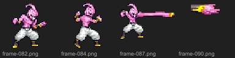
cmd:qcf+4qcf+4 Frame Linkcommand/input: qcf+4spawnFrame: 22frames: 10
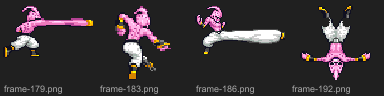
kickleftMajin Buu Left Kickcommand/input: kickspawnFrame: 12frames: 10
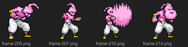
Current active projectile frames
Proposed sourced frames
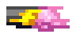
0: standalone ki shot
/characters/majin-buu/frames/frame-090.png
crop {"left":0,"top":0,"width":22,"height":10}
1: pink beam segment
/characters/majin-buu/frames/frame-179.png
crop {"left":33,"top":15,"width":37,"height":12}
2: white beam segment
/characters/majin-buu/frames/frame-186.png
crop {"left":30,"top":18,"width":52,"height":16}
Nami (Perfect Clima-Tact) weather-lightning-projectile
Sourced replacement proposal available
Weather staff/lightning rods from the Perfect Clima-Tact sheet.
Primary source: Spriters Resource page | direct PNG sheet
Launching move sequences
cmd:O+2Nami (Perfect Clima-Tact) Aura Drivecommand/input: O+2spawnFrame: 21frames: 10
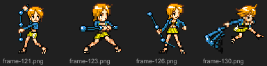
cmd:qcf+4Nami (Perfect Clima-Tact) Burstcommand/input: qcf+4spawnFrame: 22frames: 10
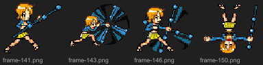
Current active projectile frames
current 0: frame-000.png

current 1: frame-001.png

current 2: frame-002.png
Proposed sourced frames
0: weather bolt rods
/characters/nami-perfect-clima-tact/frames/frame-146.png
crop {"left":36,"top":0,"width":21,"height":47}
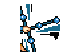
1: weather bolt cluster
/characters/nami-perfect-clima-tact/frames/frame-147.png
crop {"left":23,"top":8,"width":30,"height":36}
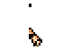
2: clima-tact electric tip
/characters/nami-perfect-clima-tact/frames/frame-141.png
crop {"left":26,"top":20,"width":29,"height":23}
Piccolo ki-energy-projectile
Sourced replacement proposal available
Namekian beam/ki projectile cropped away from his arm.
Primary source: Spriters Resource page | direct PNG sheet
Launching move sequences
cmd:f+1f+1 Frame Linkcommand/input: f+1spawnFrame: 14frames: 10
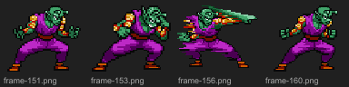
cmd:O+2Piccolo Aura Drivecommand/input: O+2spawnFrame: 24frames: 5
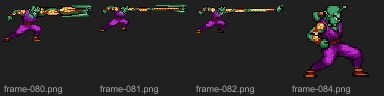
jabrightPiccolo Right Checkcommand/input: heavyspawnFrame: 11frames: 4
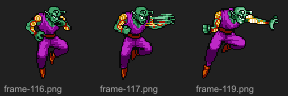
Current active projectile frames
current 0: frame-000.png
current 1: frame-001.png
current 2: frame-002.png
Proposed sourced frames
0: short beam segment
/characters/piccolo/frames/frame-156.png
crop {"left":40,"top":14,"width":24,"height":15}
1: beam shot segment
/characters/piccolo/frames/frame-080.png
crop {"left":70,"top":14,"width":42,"height":16}
2: extended beam shot
/characters/piccolo/frames/frame-082.png
crop {"left":80,"top":14,"width":68,"height":15}
Tōshirō Hitsugaya ice-energy-projectile
Sourced replacement proposal available
Ice zanpakuto wave/slash pixels, keeping the projectile icy and sword-like.
Primary source: Spriters Resource page | direct PNG sheet
Launching move sequences
cmd:O+2Tōshirō Hitsugaya Aura Drivecommand/input: O+2spawnFrame: 30frames: 10
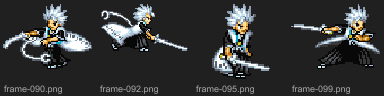
cmd:qcf+4Tōshirō Hitsugaya Burstcommand/input: qcf+4spawnFrame: 22frames: 10
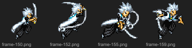
cmd:1+3Tōshirō Hitsugaya Cross Launchercommand/input: 1+3spawnFrame: 11frames: 12
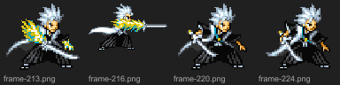
Current active projectile frames

current 0: frame-000.png

current 1: frame-001.png
Proposed sourced frames
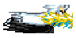
0: ice wave front
/characters/toshiro-hitsugaya/frames/frame-219.png
crop {"left":0,"top":7,"width":55,"height":22}
1: ice slash residue
/characters/toshiro-hitsugaya/frames/frame-150.png
crop {"left":0,"top":9,"width":30,"height":25}
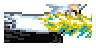
2: ice wave tail
/characters/toshiro-hitsugaya/frames/frame-219.png
crop {"left":10,"top":8,"width":45,"height":20}
Train Heartnet firearm-bullet-projectile
Sourced replacement proposal available
Black Cat gunfighter; JUS sheet has firing poses, fallback pack supplies the separated bullet/tracer.
Primary source: Spriters Resource page | direct PNG sheet
Fallback source: OpenGameArt laser/bullet pack
Launching move sequences
cmd:1+3Train Heartnet Cross Launchercommand/input: 1+3spawnFrame: 11frames: 9
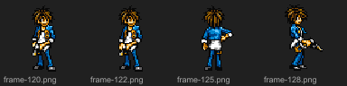
cmd:O+2Train Heartnet Aura Drivecommand/input: O+2spawnFrame: 27frames: 10
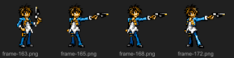
cmd:WS+4Train Heartnet Rising Strikecommand/input: WS+4spawnFrame: 11frames: 10
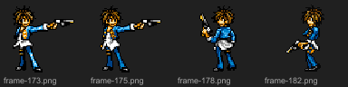
kickleftTrain Heartnet Left Kickcommand/input: kickspawnFrame: 13frames: 10
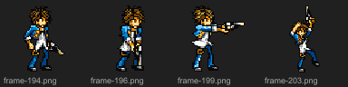
kickrightTrain Heartnet Right Kickcommand/input: specialspawnFrame: 13frames: 10
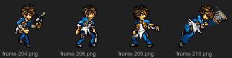
jabrightTrain Heartnet Right Checkcommand/input: heavyspawnFrame: 1frames: 6

cmd:d/f+2d/f+2 Frame Linkcommand/input: d/f+2spawnFrame: 2frames: 6

cmd:FC+2FC+2 Frame Linkcommand/input: FC+2spawnFrame: 2frames: 6
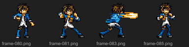
cmd:f+2f+2 Frame Linkcommand/input: f+2spawnFrame: 6frames: 6

cmd:WS+2WS+2 Frame Linkcommand/input: WS+2spawnFrame: 6frames: 6

Current active projectile frames
Proposed sourced frames

0: firearm tracer startup
Laser Sprites/65.png
full pack sprite
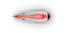
1: red-orange firearm tracer active
Laser Sprites/64.png
full pack sprite
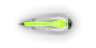
2: green/yellow tracer fallback option
Laser Sprites/66.png
full pack sprite
Yugi Mutou card-magic-projectile
Sourced replacement proposal available
Tiny outgoing card/spell pixels from Yugi source frames.
Primary source: Spriters Resource page | direct PNG sheet
Launching move sequences
cmd:O+2Yugi Mutou Aura Drivecommand/input: O+2spawnFrame: 18frames: 10
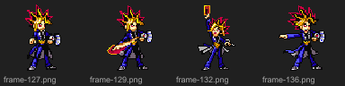
Current active projectile frames
Proposed sourced frames
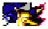
0: outgoing card/spell line
/characters/yugi-mutou/frames/frame-126.png
crop {"left":17,"top":13,"width":31,"height":15}
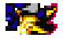
1: card/spell active
/characters/yugi-mutou/frames/frame-126.png
crop {"left":24,"top":14,"width":24,"height":14}
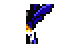
2: duel-energy recovery
/characters/yugi-mutou/frames/frame-124.png
crop {"left":25,"top":14,"width":21,"height":20}
Yusuke Urameshi spirit-energy-projectile
Sourced replacement proposal available
Spirit Gun pose has no separated shot; warm sourced tracer stands in as spirit energy.
Primary source: Spriters Resource page | direct PNG sheet
Fallback source: OpenGameArt laser/bullet pack
Launching move sequences
cmd:O+2Yusuke Urameshi Aura Drivecommand/input: O+2spawnFrame: 18frames: 10
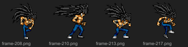
cmd:qcf+4Yusuke Urameshi Burstcommand/input: qcf+4spawnFrame: 14frames: 10
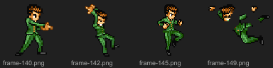
Current active projectile frames
Proposed sourced frames
0: warm spirit-shot startup
Laser Sprites/19.png
full pack sprite
1: yellow spirit-shot active
Laser Sprites/18.png
full pack sprite
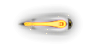
2: spirit-shot fade
Laser Sprites/65.png
full pack sprite
{kind=link}
{kind=link}
{kind=link}
{kind=link}
{kind=link}
{kind=link}
{kind=link}
{kind=link}
{kind=link}